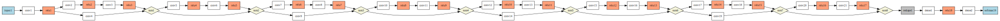

Advanced models¶
This short guide explains how to train advanced models
Training a ResNet50¶
This example trains and evaluates ResNet50 using CIFAR-10.
{kind=link}
#include <cstdio>
#include <cstdlib>
#include <iostream>
#include "eddl/apis/eddl.h"
using namespace eddl;
//////////////////////////////////
// cifar_resnet50_da_bn.cpp:
// Resnet50 with
// BatchNorm
// Data Augmentation
// Using fit for training
//////////////////////////////////
layer BN(layer l)
{
return BatchNormalization(l);
//return l;
}
layer BG(layer l) {
//return GaussianNoise(BN(l),0.3);
return BN(l);
}
layer ResBlock(layer l, int filters,int half, int expand=0) {
layer in=l;
l=ReLu(BG(Conv(l,filters,{1,1},{1,1},"same",false)));
if (half)
l=ReLu(BG(Conv(l,filters,{3,3},{2,2},"same",false)));
else
l=ReLu(BG(Conv(l,filters,{3,3},{1,1},"same",false)));
l=BG(Conv(l,4*filters,{1,1},{1,1},"same",false));
if (half)
return ReLu(Sum(BG(Conv(in,4*filters,{1,1},{2,2},"same",false)),l));
else
if (expand) return ReLu(Sum(BG(Conv(in,4*filters,{1,1},{1,1},"same",false)),l));
else return ReLu(Sum(in,l));
}
int main(int argc, char **argv){
// download CIFAR data
download_cifar10();
// Settings
int epochs = 5;
int batch_size =16;
int num_classes = 10;
// network
layer in=Input({3,32,32});
layer l=in;
// Data augmentation
l = RandomCropScale(l, {0.8f, 1.0f});
l = RandomHorizontalFlip(l);
// Resnet-50
l=ReLu(BG(Conv(l,64,{3,3},{1,1},"same",false))); //{1,1}
//l=MaxPool(l,{3,3},{1,1},"same");
for(int i=0;i<3;i++)
l=ResBlock(l, 64, 0, i==0); // not half but expand the first
for(int i=0;i<4;i++)
l=ResBlock(l, 128,i==0);
for(int i=0;i<6;i++)
l=ResBlock(l, 256,i==0);
for(int i=0;i<3;i++)
l=ResBlock(l,512,i==0);
l=MaxPool(l,{4,4}); // should be avgpool
l=Reshape(l,{-1});
layer out=Activation(Dense(l,num_classes),"softmax");
// net define input and output layers list
model net=Model({in},{out});
// Build model
build(net,
sgd(0.001,0.9), // Optimizer
{"soft_cross_entropy"}, // Losses
{"categorical_accuracy"}, // Metrics
CS_GPU({1}) // one GPU
//CS_GPU({1,1},100) // two GPU with weight sync every 100 batches
//CS_CPU()
);
// plot the model
plot(net,"model.pdf","TB"); // TB --> Top-Bottom mode for dot (graphviz)
// get some info from the network
summary(net);
// Load and preprocess training data
Tensor* x_train = Tensor::load("cifar_trX.bin");
Tensor* y_train = Tensor::load("cifar_trY.bin");
x_train->div_(255.0f);
// Load and preprocess test data
Tensor* x_test = Tensor::load("cifar_tsX.bin");
Tensor* y_test = Tensor::load("cifar_tsY.bin");
x_test->div_(255.0f);
float lr=0.01;
for(int j=0;j<3;j++) {
lr/=10.0;
setlr(net,{lr,0.9});
for(int i=0;i<epochs;i++) {
// training, list of input and output tensors, batch, epochs
fit(net,{x_train},{y_train},batch_size, 1);
// Evaluate test
std::cout << "Evaluate test:" << std::endl;
evaluate(net,{x_test},{y_test});
}
}
}
Training a U-Net¶
This example trains and evaluates a U-Net

#include <cstdio>
#include <cstdlib>
#include <iostream>
#include "eddl/apis/eddl.h"
using namespace eddl;
#define USE_CONCAT 1
//////////////////////////////////
// Drive segmentation
// https://drive.grand-challenge.org/DRIVE/
// A Multi-GPU segmentation example
// Data Augmentation graph
// Segmentation graph
//////////////////////////////////
// from use case repo:
layer UNetWithPadding(layer x)
{
layer x2;
layer x3;
layer x4;
layer x5;
int depth=32;
x = LeakyReLu(Conv(x, depth, { 3,3 }, { 1, 1 }, "same"));
x = LeakyReLu(Conv(x, depth, { 3,3 }, { 1, 1 }, "same"));
x2 = MaxPool(x, { 2,2 }, { 2,2 });
x2 = LeakyReLu(Conv(x2, 2*depth, { 3,3 }, { 1, 1 }, "same"));
x2 = LeakyReLu(Conv(x2, 2*depth, { 3,3 }, { 1, 1 }, "same"));
x3 = MaxPool(x2, { 2,2 }, { 2,2 });
x3 = LeakyReLu(Conv(x3, 4*depth, { 3,3 }, { 1, 1 }, "same"));
x3 = LeakyReLu(Conv(x3, 4*depth, { 3,3 }, { 1, 1 }, "same"));
x4 = MaxPool(x3, { 2,2 }, { 2,2 });
x4 = LeakyReLu(Conv(x4, 8*depth, { 3,3 }, { 1, 1 }, "same"));
x4 = LeakyReLu(Conv(x4, 8*depth, { 3,3 }, { 1, 1 }, "same"));
x5 = MaxPool(x4, { 2,2 }, { 2,2 });
x5 = LeakyReLu(Conv(x5, 8*depth, { 3,3 }, { 1, 1 }, "same"));
x5 = LeakyReLu(Conv(x5, 8*depth, { 3,3 }, { 1, 1 }, "same"));
x5 = Conv(UpSampling(x5, { 2,2 }), 8*depth, { 2,2 }, { 1, 1 }, "same");
if (USE_CONCAT) x4 = Concat({x4,x5});
else x4 = Sum(x4,x5);
x4 = LeakyReLu(Conv(x4, 8*depth, { 3,3 }, { 1, 1 }, "same"));
x4 = LeakyReLu(Conv(x4, 8*depth, { 3,3 }, { 1, 1 }, "same"));
x4 = Conv(UpSampling(x4, { 2,2 }), 4*depth, { 2,2 }, { 1, 1 }, "same");
if (USE_CONCAT) x3 = Concat({x3,x4});
else x3 = Sum(x3,x4);
x3 = LeakyReLu(Conv(x3, 4*depth, { 3,3 }, { 1, 1 }, "same"));
x3 = LeakyReLu(Conv(x3, 4*depth, { 3,3 }, { 1, 1 }, "same"));
x3 = Conv(UpSampling(x3, { 2,2 }), 2*depth, { 2,2 }, { 1, 1 }, "same");
if (USE_CONCAT) x2 = Concat({x2,x3});
else x2 = Sum(x2,x3);
x2 = LeakyReLu(Conv(x2, 2*depth, { 3,3 }, { 1, 1 }, "same"));
x2 = LeakyReLu(Conv(x2, 2*depth, { 3,3 }, { 1, 1 }, "same"));
x2 = Conv(UpSampling(x2, { 2,2 }), depth, { 2,2 }, { 1, 1 }, "same");
if (USE_CONCAT) x = Concat({x,x2});
else x = Sum(x,x2);
x = LeakyReLu(Conv(x, depth, { 3,3 }, { 1, 1 }, "same"));
x = LeakyReLu(Conv(x, depth, { 3,3 }, { 1, 1 }, "same"));
x = Conv(x, 1, { 1,1 });
return x;
}
int main(int argc, char **argv){
// Download Dataset
download_drive();
// Settings
int epochs = 100000;
int batch_size =3;
//////////////////////////////////////////////////////////////
// Network for Data Augmentation
layer in1=Input({3,584,584});
layer in2=Input({1,584,584});
layer l=Concat({in1,in2}); // Cat image and mask
l= RandomCropScale(l, {0.9f, 1.0f}); // Random Crop and Scale to orig size
l= CenteredCrop(l,{512,512}); // Crop to work with sizes power 2
layer img=Select(l,{"0:3"}); // UnCat [0-2] image
layer mask=Select(l,{"3"}); // UnCat [3] mask
// Both, image and mask, have the same augmentation
// Define DA model inputs
model danet=Model({in1,in2},{});
// Build model for DA
build(danet);
toGPU(danet,"low_mem"); // only in GPU 0 with low_mem setup
summary(danet);
//////////////////////////////////////////////////////////////
// Build SegNet
layer in=Input({3,512,512});
layer out=Sigmoid(UNetWithPadding(in));
model segnet=Model({in},{out});
build(segnet,
adam(0.00001), // Optimizer
{"mse"}, // Losses
{"mse"}, // Metrics
CS_GPU({1}, "low_mem")
//CS_CPU(-1)
);
// Train on multi-gpu with sync weights every 100 batches:
// toGPU(segnet,{1},100,"low_mem"); // In two gpus, syncronize every 100 batches, low_mem setup
summary(segnet);
plot(segnet,"segnet.pdf");
//////////////////////////////////////////////////////////////
// Load and preprocess training data
cout<<"Reading train numpy\n";
Tensor* x_train = Tensor::load("drive_trX.bin");
x_train->info();
x_train->div_(255.0f);
//permute
cout<<"Reading test numpy\n";
Tensor* y_train = Tensor::load("drive_trY.bin");
y_train->info();
y_train->div_(255.0f);
Tensor* xbatch = new Tensor({batch_size,3,584,584});
Tensor* ybatch = new Tensor({batch_size,1,584,584});
//////////////////////////////////////////////////////////////
// Training
int num_batches=1000;
for(int i=0;i<epochs;i++) {
reset_loss(segnet);
for(int j=0;j<num_batches;j++) {
next_batch({x_train,y_train},{xbatch,ybatch});
Tensor* xout = xbatch->select({"0"});
xout->mult_(255.0f);
xout->save("./0.tr_out_prev.jpg");
delete xout;
Tensor* yout = ybatch->select({"0"});
yout->mult_(255.0f);
yout->save("./0.ts_out_prev.jpg");
delete yout;
// DA
forward(danet, vector<Tensor *>{xbatch, ybatch});
// get COPIES of tensors from DA
Tensor* xbatch_da = getOutput(img);
Tensor* ybatch_da = getOutput(mask);
// SegNet
train_batch(segnet, {xbatch_da},{ybatch_da});
print_loss(segnet, j);
// printf(" sum=%f",yout->sum());
printf("\r");
delete xbatch_da;
delete ybatch_da;
// We should use "mult_(255.0f)" but with normalize we can stretch its contrast and see results faster
Tensor* yout2 = getOutput(out);
yout2 = yout2->select({"0"});
yout2->normalize_(0.0f, 255.0f);
yout2->save("./out.jpg");
delete yout2;
}
printf("\n");
}
}